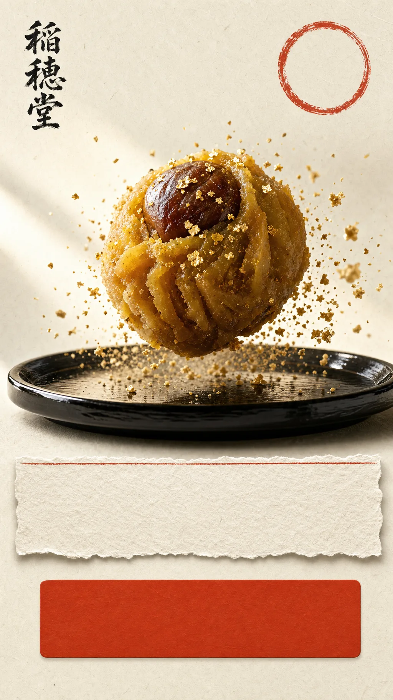
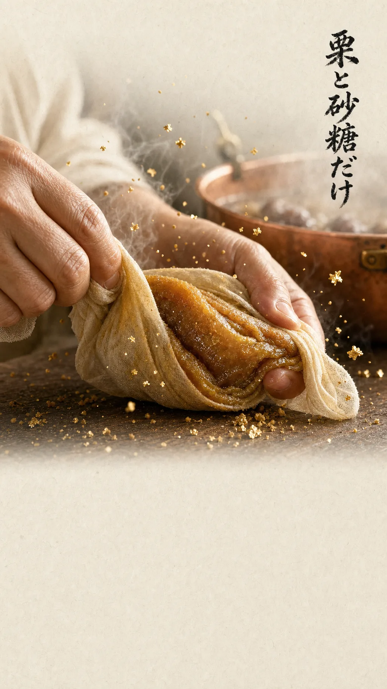
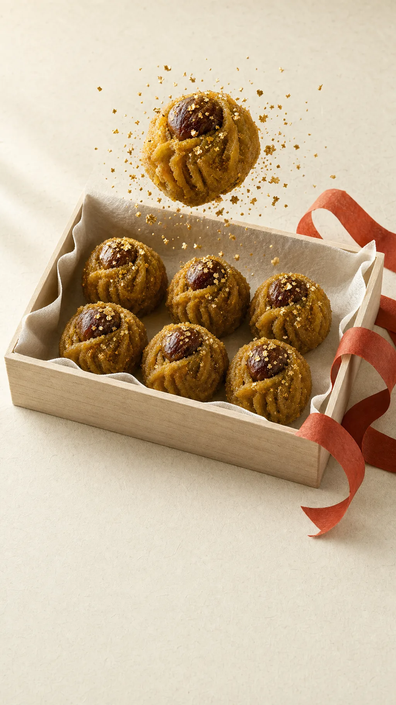

稲穂堂 — 国産栗と砂糖だけで炊き上げた栗きんとんのお取り寄せ

季節
限定
秋を、ひと粒ずつ包みました。
国産栗と砂糖だけの栗きんとん
桐箱六個入 3,240円（税込）
お取り寄せする →

余計なものは入れません。
国産栗と砂糖だけで炊き上げます。

栗きんとん 桐箱 六個入
3,240円（税込）
お取り寄せする
お品書き
栗きんとん 桐箱 六個入3,240円
栗きんとん 桐箱 十二個入6,264円
季節の詰め合わせ（栗・柿）4,320円
のし・掛け紙無料
価格はすべて税込です。送料は全国一律850円、10,000円以上のご注文で無料です。冷蔵便でお届けします。
ご注文から お届けまで
- ご注文
お届け日は最短で3日後から指定いただけます。
- その日の朝に炊く
受注分だけを当日の朝に炊き上げます。
- 手包み
ひと粒ずつさらしで絞り、桐箱に詰めます。
- 冷蔵便でお届け
賞味期限はお届け日を含めて4日間です。
お召し上がりの声
四日しか日持ちしないと聞いて驚きましたが、届いた日に食べて理由が分かりました。栗の香りがまだ立っていました。
50代・贈答用に
両親への手土産にしました。桐箱を開けたときの反応が、これまで持って行ったお菓子とは違いました。
40代・帰省の手土産に
甘さが控えめで、栗そのものの味がします。秋になると毎年この日を待つようになりました。
60代・三年目のお取り寄せ
本ページは自主制作デモです。掲載のお客様の声はすべて架空のデモ用データで、実在の人物とは関係ありません。
よくあるご質問
- 日持ちはどのくらいですか。
- 保存料を使っていないため、お届け日を含めて4日間です。冷凍はおすすめしていません。
- 贈り物として送れますか。
- のし・掛け紙を無料でお付けします。ご注文時に表書きとお名前をお知らせください。
- アレルギーが心配です。
- 原材料は国産栗と砂糖のみです。同じ工房で小麦・乳を含む菓子も製造しています。